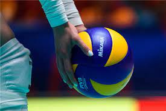

Одбојка је врста тимског и олимпијског спорта где се лопта удара руком преко мреже на противничку страну. Настала је у Сједињеним Америчким Државама 1895. године. Тим чине шест играча где свако има своју функцију. Тим се састоји од техничара, коректора, два примача, средњег блокера и либера. Техничар је мозак екипе и он увек стоји у близини мреже. Блокери такође стоје код мреже и њихова улога је да блокирају противнички смеч. Коректор смечује, а примачи и либеро примају сервис. Модерна одбојка се игра на три добијена сета, до 25 поена.
Ово је динамичан спорт који захтева брзе рефлексе, агилност, тимски рад и тактичко размишљање.

Предности играња одбојке
Физичке
Одбојка је одличан облик вежбања који помаже у побољшању кардиоваскуларног здравља, издржљивости и опште кондиције.
Побољшање физичке издржљивости: Одбојка је брза и динамична игра која захтева велику физичку спретност и издржљивост. Константно кретање, скокови и брзи покрети у игри доприносе побољшању опште физичке издржљивости.
Развој координације и баланса: Играње одбојке захтева добру координацију међу различитим деловима тела. Играчи морају бити способни брзо реаговати, правилно користити руке, ноге и тело и одржавати баланс током игре.
Јачање мишића: Ударање, скокови и блокаде у одбојци захтевају снагу у рукама, ногама и корпусу. Често понављање ових покрета у игри помаже у развоју и јачању мишића горњег и доњег дела тела.
Побољшање коштане јачине: Скокови и брза кретања у одбојци захтевају добру коштану јачину. Редовно вежбање и играње одбојке може помоћи у изградњи јачих и здравих костију.
Побољшање координације око-руке: У одбојци, играчи морају брзо реаговати на лопту и користити руке на прави начин да би је правилно додалили или ударили. Овај континуиран и прецизан рад помаже у побољшању координације око-руке.
Психички бенефити
Одбојка захтева брзе рефлексе, доношење одлука и концентрацију, што може побољшати когнитивне функције.
Побољшање концентрације: Одбојка захтева висок ниво концентрације јер играчи морају брзо реаговати на противничке ударце, предвидети кретање лопте и доносити брзе одлуке.
Развој тимског духа: Одбојка је тимски спорт у коме играчи морају сарађивати и комуницирати како би постигли заједнички циљ. Учешће у тимским активностима као што је одбојка може побољшати способност рада у тиму, разумевање улоге сваког играча и развијање осећаја заједништва.
Расположење: То је забавна и занимљива активност која може ослободити стрес и подићи расположење.
Друштвене предности
Одбојка је друштвена активност која подстиче тимски рад, комуникацију и спортски дух.
Пружа могућности за упознавање нових људи и склапање пријатељства, посебно у рекреативним лигама и турнирима.
Одбојка такође може бити начин да се повежете са другима и изградите осећај заједништва.